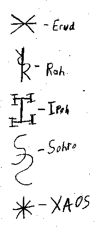

Discordian Futhark
From: "ThoughtMaster Xy"
To: zee-list
Subject: [zee-list] The Discordian Futhark, Part Uno(hehehe....)
Date: Thu, 24 Feb 2000 15:19:16 EST
The Discordian Futhark is a five character Alphabet of Desire, focused
specifically on chaos and it's aspects (or chaotic aspects of other things).
It is a means in which one can focus their will and "roll the apple" at a
(perhaps not so) specific target. Of course one is free to come up with
their own (naturally), but here is my own system, taking the four letters
from the name Eris, and one character representing Chaos. Here are my own
silly categorizations for them. Please ignore it.
The (primarily) Creative Aett
Erud = Universal Quality of Creativity
Ihpo = Universal Quality of Laughter
The (primarily) Destructive Aett
Rah = Universal Quality of Confusion
Sohro = Universal Quality of Strife or Discord
The Aett of Chaos
XAOS = Universal Quality of Chaos

Use them as you will. Love is the Law, Love under Chaos.
Hail Eris!